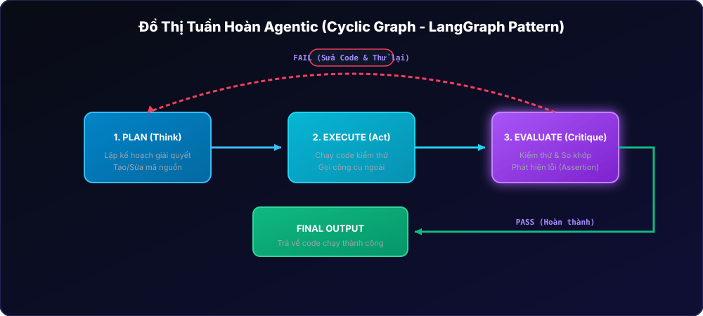
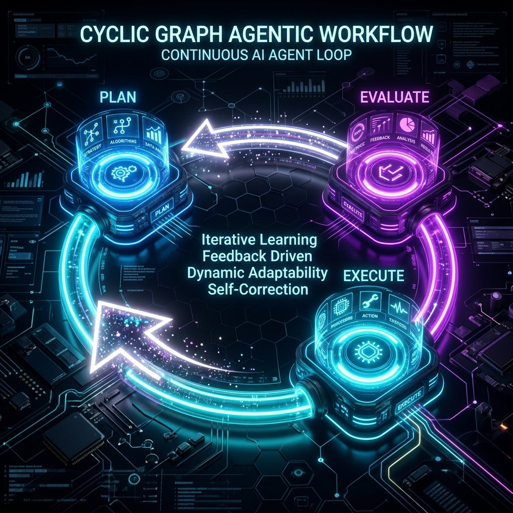
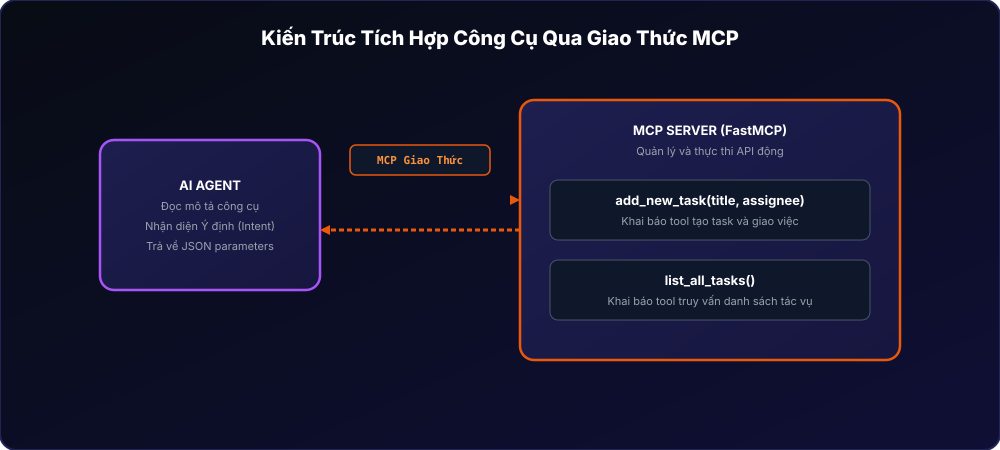
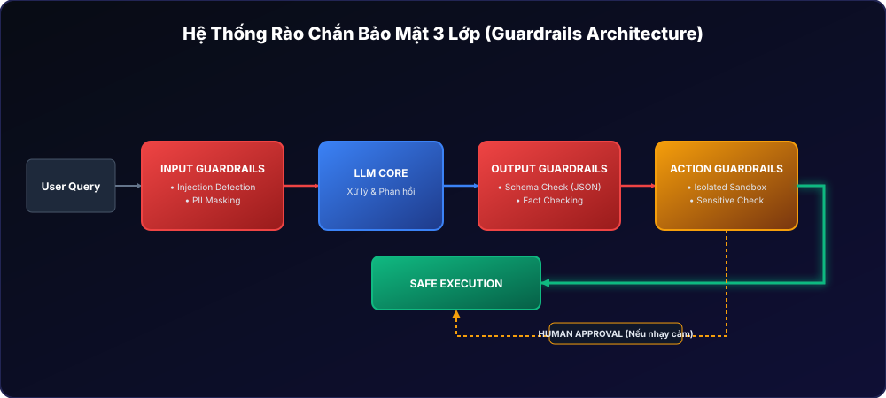
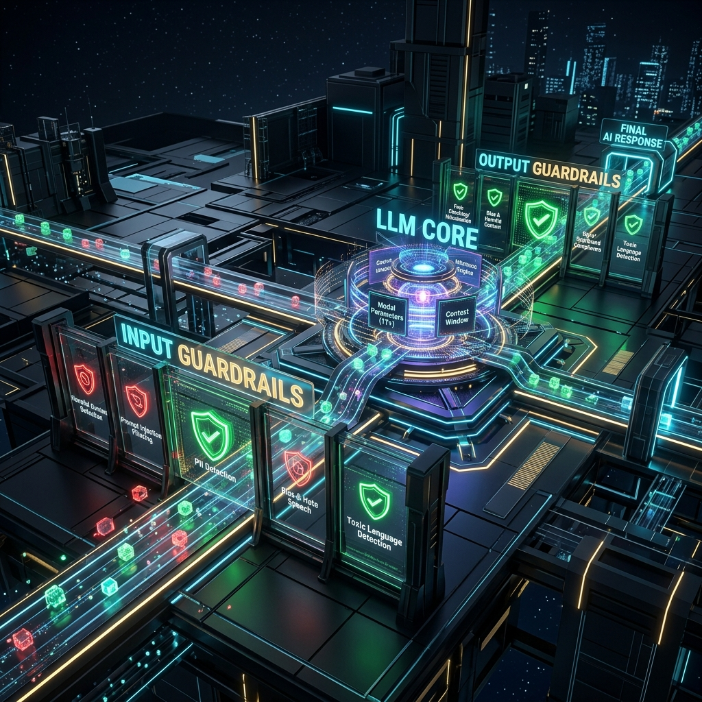
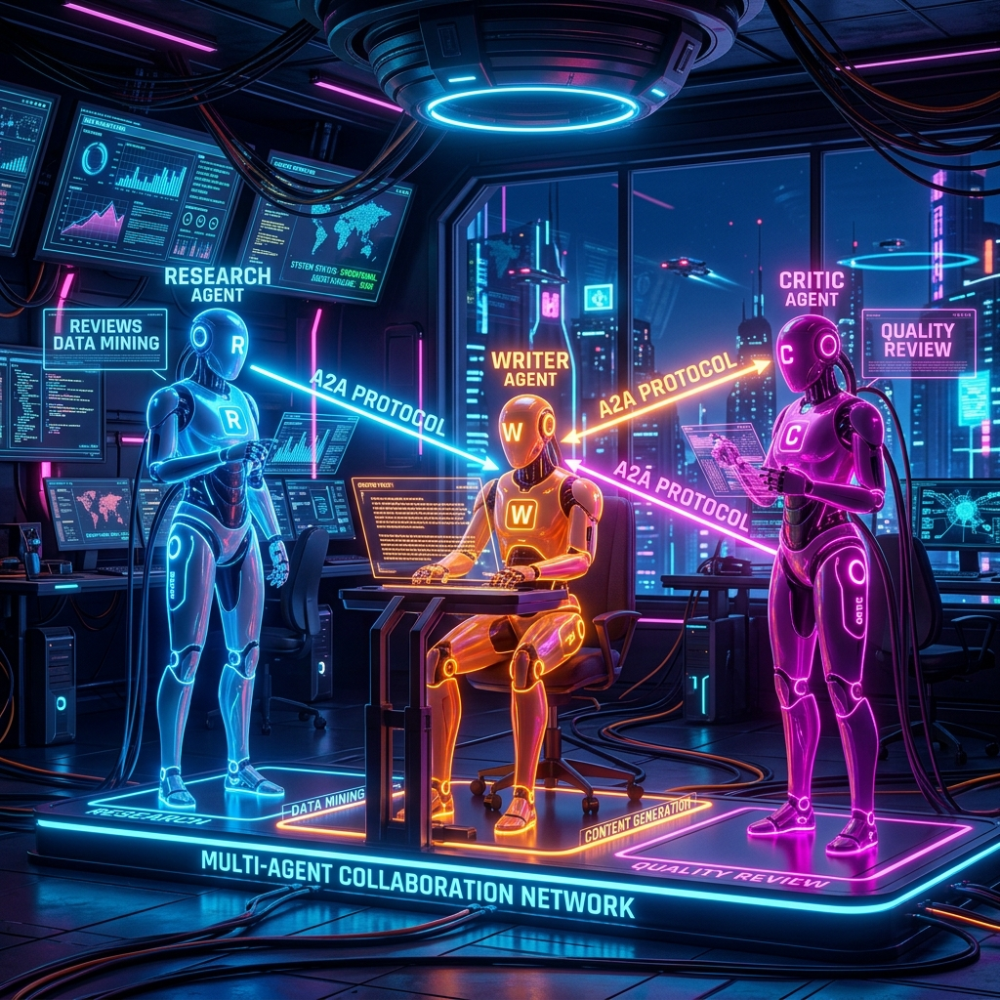

Session 05 — Harness Engineering
Các mô hình Chaining (Liên kết chuỗi) cơ bản
Trước khi chuyển sang các hệ thống tự chủ phức tạp, các tác vụ AI thường được thiết kế dưới dạng chuỗi một chiều (DAG - Directed Acyclic Graph):
- Sequential Chain: Tiến trình đi thẳng một chiều (A → B → C). Ví dụ: Nhận text → Dịch thuật → Định dạng Markdown.
- Parallel Chain: Thực thi song song nhiều LLM. Ví dụ: Đánh giá một CV đồng thời dưới góc nhìn của Senior Dev, HR và Hiring Manager.
- Conditional Chain: Rẽ nhánh dựa trên điều kiện của LLM trước. Ví dụ: Phân loại ý định email → chuyển đến Sales hoặc Support.
- Map-Reduce Chain: Phân chia tài liệu lớn → xử lý song song → gom kết quả để tóm tắt tổng thể.
Trong thực tế, các chuỗi một chiều (DAG) gặp hạn chế lớn khi xảy ra lỗi. Hệ thống cần khả năng lặp lại, đánh giá và tự sửa sai (Reflexion). Sự tiến hóa sang đồ thị tuần hoàn (Cyclic Graph) cho phép tác nhân (Agent) quay lại các bước trước (ví dụ: quay lại Plan nếu Evaluate phát hiện lỗi code).
Bảng So Sánh Các Agent Frameworks Trong Năm 2026
| Hạng mục | Framework | Đặc tính nổi bật | Khi nào nên dùng |
|---|---|---|---|
| Low-Level | LangGraph | Orchestration dựa trên State và Đồ thị có chu trình. Khả năng kiểm soát cực cao. | Xây dựng hệ thống Agent phức tạp, tùy biến luồng logic chi tiết. |
| Low-Level | Pydantic AI | Type-safe agent framework, thiết kế thuần Python với kiểu dữ liệu Pydantic nghiêm ngặt. | Các hệ thống yêu cầu xác thực kiểu dữ liệu chặt chẽ từ đầu vào đến đầu ra. |
| Mid-Level | CrewAI | Multi-agent dựa trên vai trò (Role-based), thiết lập rất nhanh. | Xây dựng nhanh các đội nhóm Agent mô phỏng phòng ban doanh nghiệp. |
| Enterprise | Google ADK | Đầy đủ tính năng quản trị bảo mật, kiểm duyệt và observability lớp doanh nghiệp. | Môi trường production doanh nghiệp cần kiểm tra vết kiểm toán nghiêm ngặt. |
| Enterprise | OpenAI Agents SDK | Cơ chế Handoff nguyên bản, tích hợp sâu vào hệ sinh thái OpenAI. | Các hệ thống thuần OpenAI và sử dụng cơ chế chuyển giao tác nhân mượt mà. |


Thực hành: Triển khai luồng lập trình đồ thị tuần hoàn có sửa sai
Yêu cầu: Mô phỏng một Graph Agent tự động viết code Python, chạy test, và tự sửa đổi code bằng một vòng lặp tối đa 3 lần nếu có lỗi cú pháp.
class AgentState(dict):
pass
def planning_node(state: AgentState):
state["attempts"] = state.get("attempts", 0) + 1
print(f"\n[Lượt #{state['attempts']}] Lên kế hoạch viết code...")
if state["attempts"] == 1:
# Lần đầu viết lỗi cú pháp thiếu dấu đóng ngoặc
state["code"] = "def test_func(): print('Hello World'"
else:
# Lần sau đã sửa chữa thành công
state["code"] = "def test_func(): print('Hello World')"
return state
def execute_node(state: AgentState):
print("-> Thực thi code trong môi trường giả lập...")
code = state["code"]
try:
compile(code, "", "exec")
state["success"] = True
state["error"] = ""
except SyntaxError as e:
state["success"] = False
state["error"] = str(e)
return state
def evaluate_node(state: AgentState):
if state["success"]:
print("🎉 Code chạy thành công! Không có lỗi cú pháp.")
return "end"
else:
print(f"❌ Phát hiện lỗi: {state['error']}.")
return "plan"
# Vòng lặp điều phối Graph
state = AgentState()
max_iterations = 3
for _ in range(max_iterations):
state = planning_node(state)
state = execute_node(state)
next_step = evaluate_node(state)
if next_step == "end":
break
else:
print("❌ Vượt quá số lần thử cho phép. Workflow thất bại.") Cơ chế Gọi công cụ & Function Calling
LLM không trực tiếp chạy các API ngoài. Thay vào đó:
- Ứng dụng khai báo danh sách công cụ (tên, tham số, mô tả) dưới dạng JSON Schema cho LLM.
- LLM nhận câu hỏi của user, chọn công cụ phù hợp nhất và trả về yêu cầu gọi hàm cùng các tham số tương ứng (ví dụ:
{"name": "get_weather", "arguments": {"city": "Hanoi"}}). - Ứng dụng thực thi hàm ở backend và truyền ngược kết quả cho LLM để tổng hợp câu trả lời cuối cùng.
Best Practice 2026: Sử dụng cấu trúc mô tả gồm: Mục đích rõ ràng trong 1 câu + Kiểu dữ liệu chi tiết của tham số + Khi nào nên và KHÔNG NÊN dùng công cụ này.
Model Context Protocol (MCP) được xem là cổng USB-C dành cho AI. Thay vì viết code tích hợp riêng lẻ cho từng API (Slack, Jira, Database), ta chỉ cần viết một MCP Server chuẩn hóa. Các MCP Client (như Cursor, Claude Desktop hoặc LangGraph) sẽ kết nối và tự động nhận diện cũng như gọi các công cụ của server một cách an toàn.

Thực hành: Dựng MCP Server quản lý tác vụ với FastMCP
Yêu cầu: Sử dụng thư viện FastMCP để tạo máy chủ công cụ chuẩn hóa, cung cấp hai tool cho AI: Tạo task và Liệt kê task.
# Cài đặt trước: pip install fastmcp
from fastmcp import FastMCP
# Khởi tạo MCP Server mang tên "TaskManager"
mcp = FastMCP("TaskManager")
# Cơ sở dữ liệu giả lập
db_tasks = []
@mcp.tool()
def create_project_task(title: str, assignee: str) -> str:
"""
Tạo một công việc mới trong dự án.
Chỉ dùng khi người dùng yêu cầu tạo việc, phân công việc hoặc nhắc việc.
"""
task_id = len(db_tasks) + 1
new_task = {"id": task_id, "title": title, "assignee": assignee, "status": "Todo"}
db_tasks.append(new_task)
return f"Thành công: Đã tạo task #{task_id} '{title}' giao cho {assignee}."
@mcp.tool()
def fetch_all_tasks() -> str:
"""
Lấy danh sách toàn bộ các task công việc trong dự án.
"""
if not db_tasks:
return "Không tìm thấy công việc nào."
result = []
for t in db_tasks:
result.append(f"[{t['status']}] #{t['id']}: {t['title']} ({t['assignee']})")
return "\n".join(result)
# Khởi chạy server
if __name__ == "__main__":
mcp.run()Bảo Mật Tác Nhân Với Rào Chắn 3 Lớp
Năm 2026, bảo mật hệ thống AI chuyển hoàn toàn sang tư duy "Treat all inputs and outputs as untrusted". Ta không còn nhồi nhét quy tắc bảo mật vào Prompt nữa mà xây dựng các bộ lọc Guardrails độc lập ở tầng hệ thống:
1. Input Guardrails
Bộ lọc chặn các mã độc Prompt Injection, PII (thông tin cá nhân) rò rỉ, và đặc biệt là Indirect Prompt Injection (mã độc ẩn mình trong các file tài liệu tải vào hệ thống thông qua RAG).
2. Output Guardrails
Bộ kiểm tra cấu trúc đầu ra (JSON/XML Schema), phát hiện hiện tượng ảo giác thông tin (Hallucination) và lọc PII trước khi gửi về cho khách hàng.
3. Action Guardrails
Cô lập môi trường chạy code sinh ra bởi AI (Sandbox Execution), kiểm tra quyền thao tác dữ liệu và thiết lập cơ chế Human-in-the-loop (Xác nhận thủ công) đối với các tác vụ nhạy cảm như xóa dữ liệu hoặc chuyển tiền.
Hệ thống Harness bắt buộc phải được giám sát thông qua các công cụ như LangSmith hoặc OpenTelemetry. Ta cần lưu trữ chi tiết vết luồng đi (Trace) của Agent để dễ dàng gỡ lỗi (Debugging) và kiểm soát các cuộc tấn công gián tiếp.


Thực hành: Triển khai chốt chặn đầu ra & xác thực phê duyệt con người
Yêu cầu: Viết mã Python triển khai hai chức năng bảo mật: Kiểm tra tính hợp lệ của schema đầu ra, và yêu cầu xác thực phê duyệt của con người nếu AI gọi hành động xóa người dùng.
import json
def validate_output_schema(raw_text: str) -> dict:
"""Output Guardrail: Kiểm chứng cấu trúc JSON trả về"""
try:
data = json.loads(raw_text)
required_fields = ["status", "response_message"]
# Kiểm tra xem có đầy đủ các trường bắt buộc không
if all(field in data for field in required_fields):
return {"valid": True, "data": data}
return {"valid": False, "error": "Thiếu trường thông tin bắt buộc."}
except json.JSONDecodeError:
return {"valid": False, "error": "Không phải JSON hợp lệ."}
def execute_action_safely(action_name: str, payload: str) -> bool:
"""Action Guardrail: Phê duyệt từ con người đối với các hành động nhạy cảm"""
sensitive_actions = ["DELETE_USER", "TRANSFER_FUNDS"]
if action_name in sensitive_actions:
print(f"\n⚠️ CẢNH BÁO BẢO MẬT: Phát hiện hành động nhạy cảm '{action_name}' với tham số '{payload}'.")
# Giả lập Human Approval từ CLI
user_choice = input("Bạn có phê duyệt hành động này không? (y/n): ")
return user_choice.lower() == "y"
return True
# Giả lập chạy thử nghiệm
response_from_llm = '{"status": "SUCCESS", "response_message": "Yêu cầu xóa tài khoản", "action": "DELETE_USER"}'
result = validate_output_schema(response_from_llm)
if result["valid"]:
action = result["data"].get("action")
if execute_action_safely(action, "User_ID: 999"):
print("✅ Đã phê duyệt và thực thi hành động an toàn.")
else:
print("❌ Từ chối thực thi: Bị con người bác bỏ hành động xóa.")
else:
print(f"❌ Chặn luồng: Lỗi cấu trúc đầu ra ({result['error']})")Thiết Kế Hệ Thống Đa Tác Nhân (Multi-Agent)
Đối với các tác vụ quá rộng lớn, việc sử dụng một Single Agent duy nhất sẽ làm phình to bối cảnh đầu vào và dễ gây nhầm lẫn công cụ (Context Confusion). Giải pháp hiệu quả nhất là chia nhỏ hệ thống thành nhiều Agent chuyên biệt:
- Hub-Spoke (Orchestrator/Router): Tác nhân trung tâm điều phối và phân chia việc cho các tác nhân con.
- Handoff (Chuyển giao): Tác nhân A tự động bàn giao trạng thái và chuyển quyền điều hành cho tác nhân B khi phát hiện nội dung thuộc chuyên môn của tác nhân B.
- Debate (Tranh biện): Nhiều tác nhân phân tích phản biện chéo nhau (ví dụ: Dev viết code, Security rà soát lỗi bảo mật), sau đó Moderator sẽ tổng hợp kết quả cuối cùng.
Được đề xuất năm 2026, giao thức A2A (Agent-to-Agent Protocol) của Google giúp giải quyết bài toán giao tiếp chéo. Các tác nhân được xây dựng trên nhiều nền tảng và framework khác nhau (LangGraph, Autogen, Google ADK) có thể tự động khám phá năng lực của nhau, chia sẻ lịch sử bối cảnh và ủy quyền thực hiện công việc mà không gặp rào cản kỹ thuật.


Thực hành: Triển khai cơ chế bàn giao công việc (Handoff Pattern)
Yêu cầu: Triển khai mô hình bàn giao tác vụ đơn giản. Khi Tác nhân tổng đài nhận được câu hỏi chứa từ khóa lập trình (code, python), nó sẽ thực hiện chuyển quyền điều phối cho Tác nhân Kỹ thuật xử lý.
class SpecialistAgent:
def __init__(self, name: str, domain: str):
self.name = name
self.domain = domain
def process(self, query: str) -> str:
return f"[{self.name}] Đã xử lý chuyên môn về '{self.domain}': Thực thi lập luận cho câu hỏi '{query}'."
# Khởi tạo các Agent chuyên gia
support_agent = SpecialistAgent("CSKH Agent", "Dịch vụ khách hàng và giải đáp chung")
engineering_agent = SpecialistAgent("Dev Agent", "Lập trình phần mềm và sửa lỗi code")
def route_query_with_handoff(query: str):
print(f"\nYêu cầu nhận được: '{query}'")
# Logic Routing kiểm tra từ khóa chuyên ngành để thực hiện Handoff
if any(keyword in query.lower() for keyword in ["code", "python", "lập trình"]):
print(f"-> [CSKH Agent] Phát hiện yêu cầu kỹ thuật chuyên sâu. Chuyển tiếp (Handoff) sang {engineering_agent.name}...")
response = engineering_agent.process(query)
else:
response = support_agent.process(query)
print(response)
# Thực thi kiểm thử
route_query_with_handoff("Tôi muốn đăng ký mua tài khoản premium.")
route_query_with_handoff("Viết code Python để lọc email rác.")